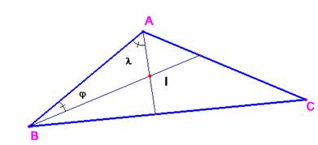

Para el aula
Problema 269.- ¿Podrías construir un
triángulo con sus dos bisectrices perpendiculares?
Ejemplos de problemas que plantean tareas ricas.
Vila, A., Callejo, M,L.
(2004): Matemáticas para aprender a pensar Narcea (pág 136). Con permiso de los autores, a quines el director
agradece la gentileza.
Solución de Saturnino Campo Ruiz,
profesor del IES Fray Luis
de León (Salamanca).

No, pues si el ángulo AIB fuese recto, j + l = 90º y por tanto los ángulos en A
y en B sumarían 180º. Y esto es
imposible.